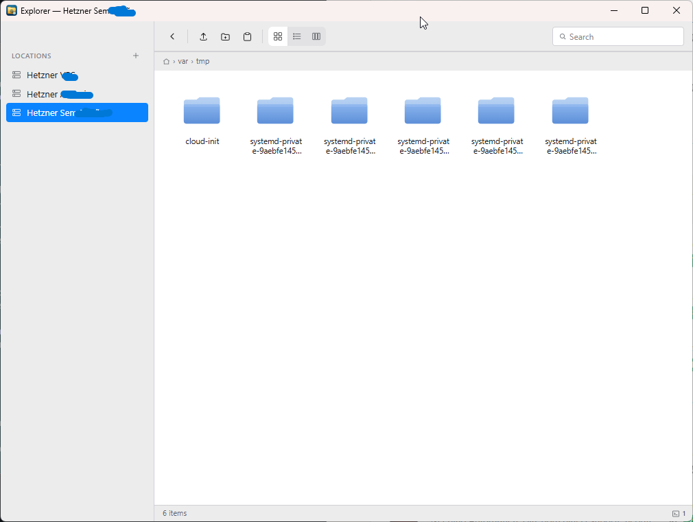
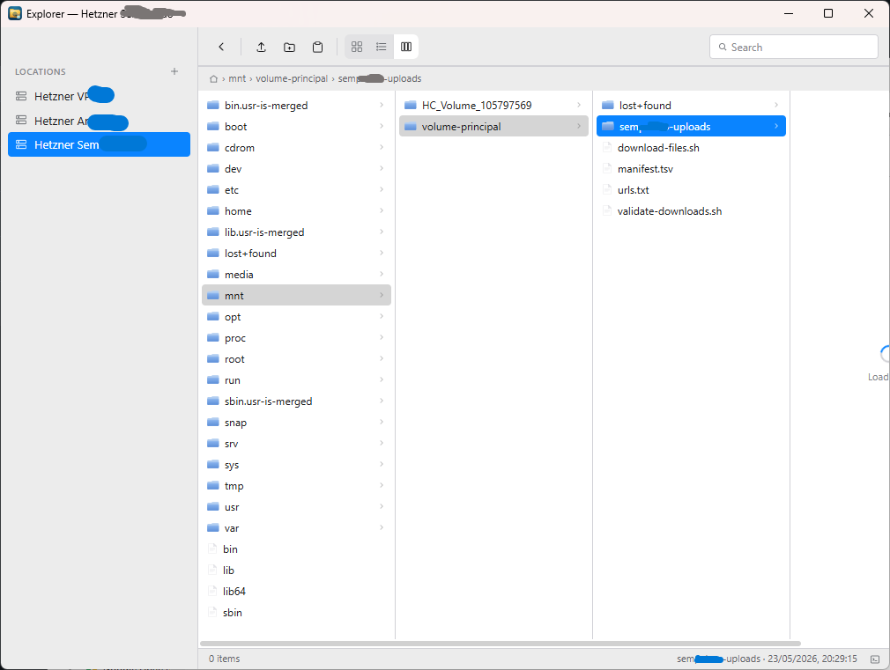
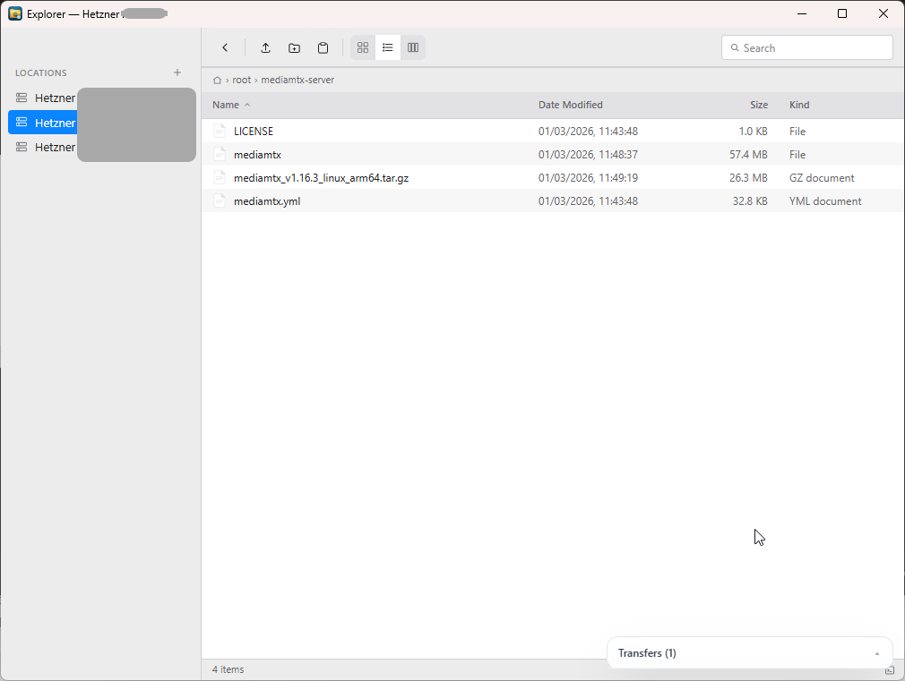
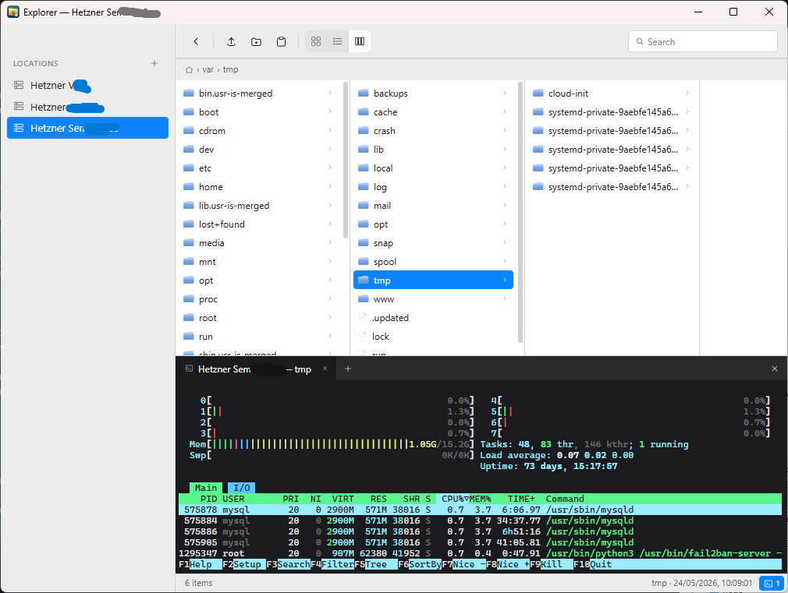
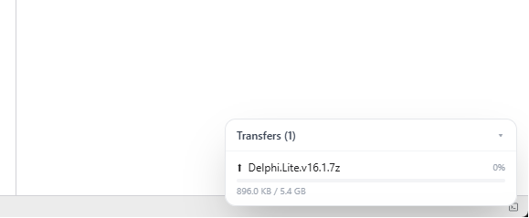

view-icons.png
1200 × 800
Icons
Grid of folders and files with selection chips and quick tooltips.
Open source · Windows · Native
A native SFTP client with a Finder-style column view, built-in SSH terminal, and the modern UX server software forgot.

Three views
Icons for visual scanning. List for sorting and details. Columns for drilling deep into the tree — the macOS classic, on Windows.

Grid of folders and files with selection chips and quick tooltips.

Sortable columns: name, modified, size, kind. Alternating rows, header sort indicators.

Miller columns straight from Finder. Drill down without losing context.
Integrated terminal
Click the terminal icon and a tabbed SSH shell drops in, rooted at the folder you're already browsing.


Transfers
Drop files from Windows Explorer straight into any remote folder. Or hit Ctrl+C on a file in Explorer, then Ctrl+V here — it just uploads.
Why ST Explorer
Keyboard-first
Because reaching for the mouse to rename a file is a tax we already pay enough.
Free. Open source. Ready today.
Requires Windows 10 / 11 with WebView2. Compatible with macOS and Linux through Wails (build from source).